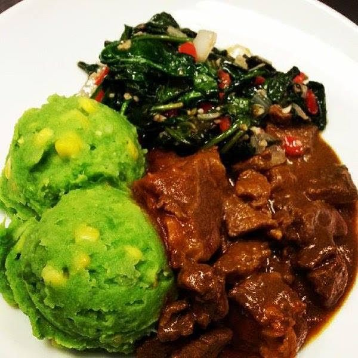

Mukimo Recipe

Mouth Watering Mukimo and Beef Stew
Mukimo is a traditional kenyan delicacy made with mashed potatoes, soft maize and specific greens.
The dish is liked by many as it is served in weddings, family gatherings and other big occasions.
Ingridients
- 2 kg potatoes, peeled and washed
- 1 kg soft maize, boiled
- 1 bunch pumpkin leaves, boiled and blended
- 3 tbspn ground stinging nettle
- salt to taste
Steps
- In a large sauce pan, boil the potatoes till soft and tender. Take out from heat and drain excess water.
- Using a kitchen masher, mash the potatoes till no lumbs found.
- Add the boiled maize, blended pumpkin leaves, stinging nettle and stir Using a wooden spoon to mix all ingridients
together. Season with salt and pepper and continue stirring till smooth and green colour is evenly spread.
- Serve acctractively accompanied with your favourite beef stew and enjoy